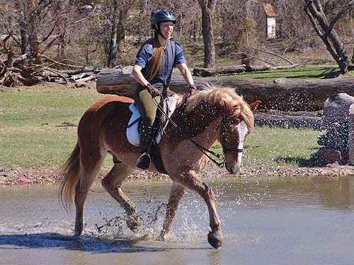
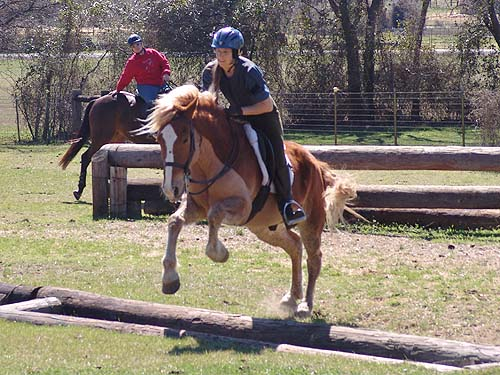

Mo's First Cross
Country Schooling at Quail Run Farm
Ready to head out.
The pelham is what I usually hunt him
in. We talked about tying up the curb rein, but it was easiest to just
ride with both. It was more bit than he needed, and the one or two times
we hit him in the mouth we felt quite bad.
Warming up over a cavalletti.
No trouble with the creek crossing.
He gave a few leads to the others.
Some warmup trot work.
Happy to lead the way.
He walked right in the water.

Trotting through on the way to a jump.
He wasn't sure how big he needed
to make the jump. It took a few jumps to settle in.
Chrissie and I traded and she took
Mo through the combination of jump, water, jump.
The first try he was careful
and jumping green.
The next time through he started to
figure it out.
Much more reasonable than our first
try over.
Down the bank.
Combining a jump and then heading
to the....
Up bank.
We traded back, so here I am jumping
Mo.

Jumping the ditch first try. There
was nothing he didn't try for us. For our part, we made sure we didn't
overface him.
Not worried about the cows on course.
I like his trot. It's comfy and can
cover the ground.
Some canter work out in the open.
His canter was nicely balanced, but
he didn't figure out, today, how to take a jump from a canter stride. When
we tried, the jumps were still awkward. But, on the plus side, he did figure
out about not over jumping, but stayed careful and never got excited.